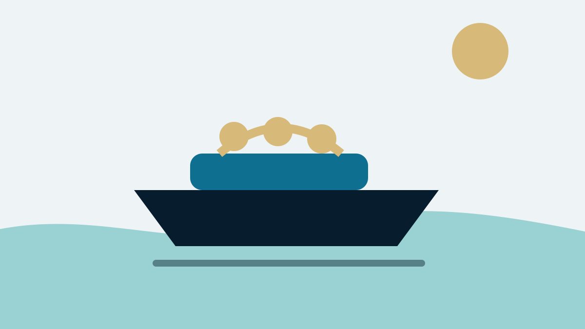

The brochure shows the family already aboard. The ramp is empty, the water is flat and nobody needs a bathroom. Real ownership begins elsewhere: one adult holds a line while a child asks for a snack, the wind presses the bow off the trailer and three beach bags occupy the only walkway. A great family boat does not eliminate these moments. Its layout and handling keep them from taking over the day.
Define the family day before the boat
Write the most common outing in plain terms: four people, inland lake, swimming, picnic, occasional tube, trailer each weekend. Then write the hardest regular day: six people, afternoon chop, crowded ramp, tired children and a thirty-minute drive home. The boat must serve both.
A vessel chosen for an imagined annual fishing trip may compromise fifty family cruises. Prioritize the activities that happen most. Rank shade, toilet, water-sports performance, fishing space, overnight capability and tow-vehicle limits. The ranking prevents a salesperson’s most photogenic feature from becoming the deciding factor.
Bowrider, deck boat, pontoon or dual-console?
Bowriders handle varied water and tow sports well but can feel tight with gear. Deck boats trade some traditional shape for more usable width and boarding. Pontoons provide extraordinary social space and stability on protected water, while windage, rough-water behavior and trailer width deserve attention. Dual-consoles combine weather protection, fishing utility and family seating, often at higher cost.
Cuddy cabins and small cruisers add shelter and a real overnight option but bring systems, weight and maintenance. No category wins every family. The correct hull follows water conditions first, then use.
Boarding is the first design test
Approach from dock and water. Is there a stable step, handhold and clear path? Can a grandparent board without stepping on upholstery? Can a child climb the swim ladder while wearing a life jacket? Does the ladder deploy from the water?
Transom doors and broad platforms improve access but must coexist with the engine and propeller. Establish engine-off swimming rules and remove the key. At the dock, one adult controls the boat while another helps passengers. A layout that forces everyone through one narrow opening with no handhold will be difficult every trip.

Capacity plates are not comfort ratings
The capacity plate states limits, not the number of people who can spend eight pleasant hours aboard with coolers, jackets and bags. Weight includes people, gear, fuel and equipment according to the boat’s requirements. A boat at legal capacity can still be crowded and handle poorly.
Conduct a seating map with the actual family. Every child needs a protected position and handhold. Keep weight distribution in mind; placing every adult aft can hurt planing and visibility. The best test is not whether everyone can sit for a photograph, but whether someone can reach the head or dock line without climbing over knees.
Shade is safety equipment
Bimini coverage, hardtops and removable shades extend the day and reduce heat load. Check coverage at morning and afternoon sun angles, not only directly overhead. A short top may shade the helm while children roast in the bow. Support poles and canvas should not create head-strike or boarding hazards.
Shade does not replace sunscreen, hats, water and breaks. It reduces fatigue, which improves behavior and docking judgment. In hot climates, the difference between a four-hour and eight-hour family boat is often not fuel capacity but a place to cool down.
Storage: give every wet thing a home
Open every compartment. Can life jackets remain accessible without absorbing bilge odor? Is there a ventilated place for wet line and towels? Do skis, tow ropes, fenders and a cooler block the walkway? Deep storage is not useful when one person must lift a heavy seat while another stands on it.
Drainage matters. Carpeted boxes and unsealed plywood age poorly when wet gear lives inside. Bring representative bags to the showroom. A family boat needs enough empty storage after required safety gear is aboard; otherwise loose items become projectiles.

The toilet question
Young children, long days and mixed-age crews make a private head or portable toilet more important than many first-time buyers admit. Check actual privacy, ventilation, tank access and cleanup. A changing compartment too small for an adult to turn is not a functional head.
Portable systems are simple but must be carried and emptied. Fixed sanitation adds pumps, hoses, winterization and odor control. The right answer depends on trip length and willingness to maintain another system. Pretending nobody will need it is not a plan.
Ride and freeboard
Test in representative water. A flat-bottom social platform may be superb on a protected lake and uncomfortable in afternoon bay chop. Deeper-V hulls soften waves but can require more power and may feel less stable at rest. High freeboard helps contain children and spray, yet creates a larger boarding step and more windage.
Watch visibility onto plane. Can the captain see ahead with passengers seated normally? Does the bow rise excessively? Does the boat wander at idle? Handling at five miles per hour around a dock affects family stress more often than top speed.
Power: enough without building the trip around fuel
Choose power for loaded operation, water-sports goals and hull rating. An underpowered boat may struggle to plane with family and gear, forcing wide-open throttle. Maximum power can improve reserve and resale but costs more to buy and feed. The middle or upper-middle of the recommended range is often practical for mixed family use, depending on hull.
Ask for performance data with realistic load. Learn cruise speed and fuel burn, not just top speed. Budget for fuel at the usage the family can sustain. A boat that makes every outing feel financially irresponsible will be used less.
Safety layout and child rules
Identify pinch points, sharp hardware, open bow gaps, windshield latches and access to the propeller area. Check navigation lights from all seating configurations. Required life jackets need accessible storage; children wear properly fitted devices according to law and family policy.
Create three simple rules: life jackets before boarding, seated while under way, and no transom access until the engine is off and the captain gives permission. Complexity is the enemy when friends join. The boat should make compliance easy with clear paths and handholds.

Trailering and the tow vehicle
Use actual loaded boat, engine, trailer, fuel, batteries and gear weight—not a dry brochure number. Check tow rating, payload, hitch, axle ratings and tongue weight. A family vehicle loaded with people and luggage may have far less payload remaining for tongue weight than expected.
Measure storage height with tower, bimini and windshield. Confirm garage depth and neighborhood rules. Practice launching on a quiet weekday. A wonderful boat that requires a stressful oversized tow every weekend can become a marina boat—or a boat for sale.
Ownership cost beyond the payment
Budget insurance, registration, storage, maintenance, winterization, trailer service, fuel, launch fees, cleaning and depreciation. New upholstery, covers and electronics age even when the engine runs perfectly. A marina slip costs more but may double use by removing launch friction.
Set an annual boating number the household accepts. Spend first on reliability and safety. The family will remember canceled days from a weak battery more than the absence of premium speakers.
Buying used
Hire a qualified surveyor for a significant purchase and obtain engine diagnostics or mechanical inspection. Check structure, moisture, fuel, electrical, controls, steering, canvas and trailer. Maintenance records reveal the ownership culture. A spotless interior can coexist with neglected outdrive bellows or old tires.
Sea trial from cold start with the normal family aboard if possible. Test idle handling, acceleration, cruise, reverse, trim and restart. Open every compartment after the run for water, fuel odor or heat. Do not let an enthusiastic seller narrate over an unfamiliar sound.
The family sea trial
Bring the people who will use the boat, not a committee of distant friends. Pack a cooler and typical bags. Have each person board, sit, move and use the ladder. Run into and with the available chop. Dock in a crosswind. Put the top up and down.
Afterward, ask separate questions: Who felt safe? Who lacked a handhold? What was hard? Which feature mattered? Children may notice heat or noise before adults focused on horsepower. The best family boat is selected by the whole day, not the captain’s ten minutes at the wheel.
The verdict
For mixed inland use, a well-designed deck boat or bowrider often provides the strongest balance. A pontoon is hard to beat for protected-water social space. A dual-console earns its cost when weather protection, fishing and family cruising share the schedule. Small cruisers suit families who truly overnight.
Choose the boat that reduces friction: easy boarding, usable shade, honest storage, predictable handling and affordable ownership. The family does not need the most boat. It needs a boat everyone still wants to use in year three.
Frequently asked questions
What type of boat is best for a family?
Deck boats and bowriders are versatile for inland use, pontoons maximize social space on protected water, and dual-consoles add weather protection and fishing utility. The normal water and activity should decide.
How many people can comfortably fit on a boat?
Fewer than the legal capacity in many cases. Count gear, movement, storage and safe seating rather than using the capacity plate as a comfort rating.
Should a family boat have a toilet?
For young children or long days, a private toilet can materially improve use. Decide whether the family will maintain a portable or fixed sanitation system.